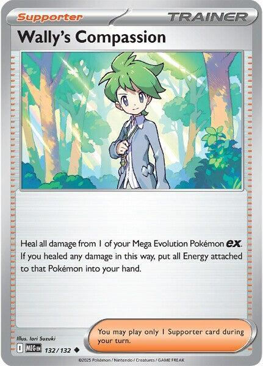
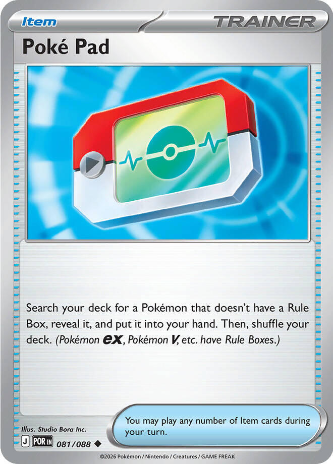
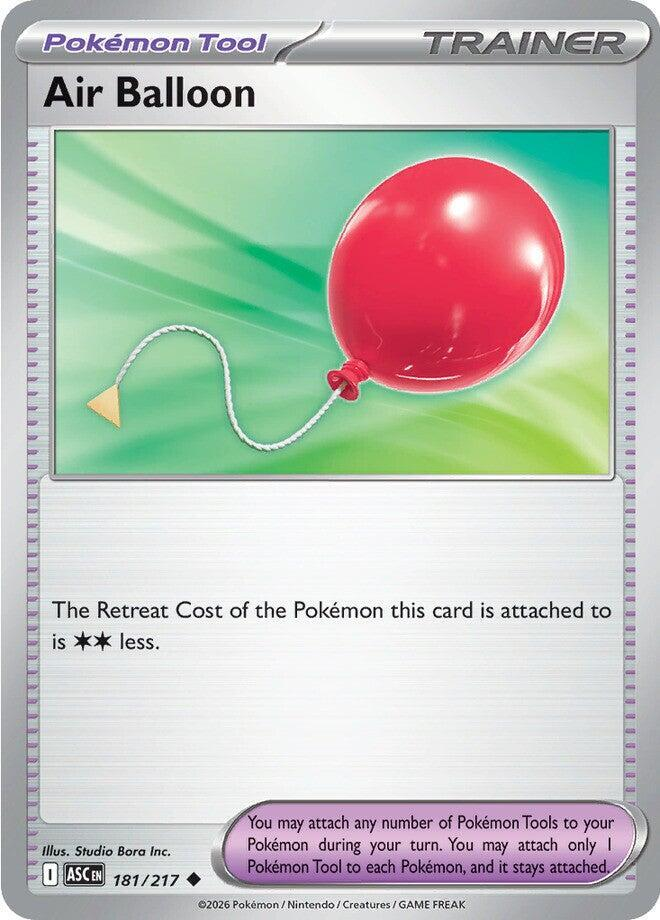
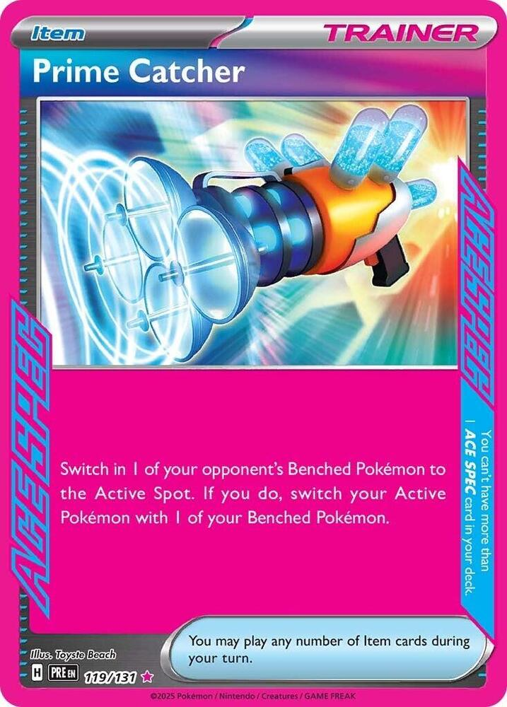

x4
x4 x4
x4 x3
x3 x2
x2 x2
x2

 x2
x2 x2
x2
 x4
x4 x3
x3![Boss's Orders [Ghetsis]](./assets/654453_bosss-orders-ghetsis.jpg) x3
x3
 x4
x4 x4
x4
x3 x2
x2



 x4
x4 x6
x6 Xero's Psychic Lanterns
Xero's Psychic Lanterns 

One box, two decks · a legal tourney 60 that runs the Night Parade at home
← back to all decks
Mega Chandelure ex reads like a midrange attacker and plays like a trap.
Phantom Maze does 130 plus 50 for each  in the opponent's Active Pokémon's Retreat Cost, and its own Ability, Binding Flame, adds one to that cost from anywhere on your board. The damage is not a number. It is a question: what is standing in front of it, and how much does that thing weigh?
in the opponent's Active Pokémon's Retreat Cost, and its own Ability, Binding Flame, adds one to that cost from anywhere on your board. The damage is not a number. It is a question: what is standing in front of it, and how much does that thing weigh?
| Their Active's printed Retreat | One Flame | Two Flames |
|---|---|---|
| 0 | 180 | 230 |
| 1 | 230 | 280 |
| 2 | 280 | 330 |
| 3 | 330 | 380 |
A good opponent keeps something light up front, so the deck's real engine is choosing their Active for them. Boss's Orders or Prime Catcher drags the heavy thing forward, Binding Flame makes it heavier, and Phantom Maze converts its Retreat Cost into damage. At 330 you one-shot nearly every ex in the format; at 380 you one-shot every card ever printed.
The second payoff is the one no other Mega Chandelure list on Limitless runs. Froslass pings every Ability Pokémon on both boards at every Checkup. Your own Megas and Dusknoir barely feel it, but each lightly singed bencher turns Gourgeist ex's Horrifying Rondo into 130 to 180 damage for a single Energy, from a 270 HP body worth only two Prizes. The opponent's Ability Pokémon take the same drip, and drips close breakpoints. Damage counters ignore Weakness, Resistance, and bench immunity, exactly as they always did.
Fittingly, the deck that beats Mega Chandelure hardest in the online meta wins with retreat-cost scaling plus Froslass chip. The best anti-lantern tech in the format is this deck's own idea. We aim it forward.
x4x4x3x2x2x2x2x4x3x3
x4x4
x3x2

x4x6Pokémon (22)
| Qty | Card | Set | Number | Reg |
|---|---|---|---|---|
| 4 | Litwick | Pitch Black | 036 | J |
| 4 | Lampent | Pitch Black | 037 | J |
| 3 | Mega Chandelure ex | Pitch Black | 038 | J |
| 2 | Pumpkaboo | Chaos Rising | 040 | J |
| 2 | Gourgeist ex | Chaos Rising | 041 | J |
| 1 | Snorunt | Twilight Masquerade | 051 | H |
| 1 | Snorunt | Ascended Heroes | 046 | I |
| 2 | Froslass | Twilight Masquerade | 053 | H |
| 2 | Duskull | Shrouded Fable | 018 | H |
| 1 | Dusknoir | Shrouded Fable | 020 | H |
Trainers (28)
| Qty | Card | Type | Set | Number | Reg |
|---|---|---|---|---|---|
| 4 | Lillie's Determination | Supporter | Mega Evolution | 119 | I |
| 3 | Hilda | Supporter | White Flare | 084 | I |
| 3 | Boss's Orders | Supporter | Mega Evolution | 114 | I |
| 1 | Wally's Compassion | Supporter | Mega Evolution | 132 | I |
| 4 | Buddy-Buddy Poffin | Item | Temporal Forces | 144 | H |
| 4 | Rare Candy | Item | Mega Evolution | 125 | I |
| 3 | Poke Pad | Item | Perfect Order | 081 | J |
| 2 | Night Stretcher | Item | Shrouded Fable | 061 | H |
| 1 | Wondrous Patch | Item | Phantasmal Flames | 094 | I |
| 1 | Switch | Item | Mega Evolution | 130 | I |
| 1 | Air Balloon | Tool | Ascended Heroes | 181 | I |
| 1 | Prime Catcher | Item | Prismatic Evolutions | 119 | H |
Energy (10)
| Qty | Card | Set | Number | Reg |
|---|---|---|---|---|
| 4 | Telepathic Psychic Energy | Perfect Order | 088 | J |
| 6 | Basic Psychic Energy | Mega Evolution Energies | 005 | - |
22 + 28 + 10 = 60. ✓
Basics: 10 (4 Litwick, 2 Pumpkaboo, 2 Snorunt, 2 Duskull), which works out to roughly a 26% mulligan rate. That is the worst number in the deck and the first thing Test and Tune watches. Every Basic is 70 HP or under, so all four Poffins stay live, and three of the four names are Basic Psychic, so Telepathic Energy fetches them too. Snorunt is the exception; it is Water, and only Poffin, Poke Pad, or Dawn-style search can find it.


 Psychic
Psychic Darkness ×2
Darkness ×2 Fighting -301
Fighting -301 legal (Reg J)Will-O-Wisp (20)
legal (Reg J)Will-O-Wisp (20)The Basic the deck stands on, and the only Psychic Litwick ever printed. The White Flare and Twilight Masquerade prints are Fire and cannot pay a cost, and your old Fire copies do not serve this line. 70 HP keeps it inside Poffin range.

 PsychicDarkness ×2Fighting -301legal (Reg J)Spreading Light - Search your deck for up to 3 Lampent and put them onto your Bench. Then, shuffle your deck.
PsychicDarkness ×2Fighting -301legal (Reg J)Spreading Light - Search your deck for up to 3 Lampent and put them onto your Bench. Then, shuffle your deck.Spreading Light is the endgame in one attack: search your deck for up to 3 Lampent and bench them. They arrive as Lampent, not as Litwick, so each one is a Mega Chandelure next turn with no Rare Candy spent. This attack is why the line runs a fat 4 Lampent, and it is the trick that started this whole build. See game plan 4.
 PsychicDarkness ×2Fighting -302legal (Reg J)Phantom Maze (130+) - This attack does 50 more damage for each Retreat Cost.
PsychicDarkness ×2Fighting -302legal (Reg J)Phantom Maze (130+) - This attack does 50 more damage for each Retreat Cost.Stage 2 from Lampent. Gives up 3 Prize cards. 350 HP, Retreat 2, and the stat line carries two quiet gifts: Resistance to Fighting, which blunts Mega Zygarde and the Fighting decks that hunt Gengar, and a Darkness Weakness that this house will absolutely exploit in the mirror.
Binding Flame needs no Energy and no activation; it sits there making every retreat more expensive and every Phantom Maze 50 harder. It works from the Bench, so a Chandelure that is not attacking is still doing its job. It stacks. Two in play is plus 2 to their Retreat Cost and plus 100 to the attack, and that is settled; the official Pitch Black strategy article says to play multiple copies for exactly this reason.
Three copies is the ceiling on purpose. Each one on the board is three Prizes standing in the open, and the second Flame buys far more than the third. Two on the board is the number.

 PsychicDarkness ×2Fighting -302legal (Reg J)Stampede (20)
PsychicDarkness ×2Fighting -302legal (Reg J)Stampede (20)60 HP, Poffin-legal, and its whole job is becoming Gourgeist ex.
PsychicDarkness ×2Fighting -302legal (Reg J)Horrifying Rondo (30+) - This attack does 50 more damage for each of your Benched Pokémon that has any damage counters on it.Ghostly Touch (140) - Discard a random card from your opponent's hand.Stage 1, 270 HP, 2 Prizes, and no Ability, which means Froslass never pings it. Horrifying Rondo does 30 plus 50 for each of your Benched Pokémon that has damage on it. Your Bench, not theirs. In most decks that clause is dead text; here Froslass arms it every single Checkup. Ghostly Touch is the other half: 140 and a random card ripped from their hand, for two Energy, with no setup at all. Rondo and Ghostly Touch both ignore Retreat Cost entirely, which makes Gourgeist the answer to every opponent the trap cannot reach.


 Water
Water Metal ×21legal (Reg H)Astonish (20) - Choose a random card from your opponent's hand. Your opponent reveals that card and shuffles it into their deck.
Metal ×21legal (Reg H)Astonish (20) - Choose a random card from your opponent's hand. Your opponent reveals that card and shuffles it into their deck.60 HP, Poffin-legal, and it exists to become Froslass. Its attack costs , and this deck runs no Water, so it never attacks. That is fine. Furniture does not need to fight.
The second copy is the Ascended Heroes print (046, the Love Ball pattern). Same name, so Froslass evolves from it all the same, and it is the better half of the pair: 70 HP instead of 60, still inside Poffin range, and its Reg I mark outlives the TWM print's April 2027 rotation.

 WaterMetal ×21legal (Reg H)Frost Smash (60)
WaterMetal ×21legal (Reg H)Frost Smash (60)Freezing Shroud: at every Pokémon Checkup, put 1 damage counter on each Pokémon that has an Ability, both yours and theirs, except any Froslass. Read what that does here twice. Their board is full of Ability Pokémon, so it is a global slow poison. Your board is full of Ability Pokémon too, and that is the point: every ping on your own Chandelure and Dusknoir is 50 more on Horrifying Rondo.
Water type, so no searcher shares her and no Energy here pays her attack; she is a 90 HP support piece who never fights. The earlier draft ran her 1-1 and pretended she was part of the plan. A 1-of opens in hand 12% of the time and sits in the Prizes 10% of the time, so 1-1 was a coin-flip cameo. At 2-2 she is a plan.

 PsychicDarkness ×2Fighting -301legal (Reg H)Come and Get You - Put up to 3 Duskull from your discard pile onto your Bench.Mumble (30)
PsychicDarkness ×2Fighting -301legal (Reg H)Come and Get You - Put up to 3 Duskull from your discard pile onto your Bench.Mumble (30)60 HP seed. Come and Get You benches up to 3 Duskull from the discard pile, which quietly turns every discarded Duskull into a future Dusknoir rather than a lost card.
 PsychicDarkness ×2Fighting -303legal (Reg H)Shadow Bind (150) - During your opponent's next turn, the Defending Pokémon can't retreat.
PsychicDarkness ×2Fighting -303legal (Reg H)Shadow Bind (150) - During your opponent's next turn, the Defending Pokémon can't retreat.The thirteen-counter button. Once during your turn: put 13 damage counters on one opposing Pokémon, anywhere on their board, and Dusknoir Knocks itself Out. That is 130 placed damage that ignores Weakness, Resistance, bench immunity, and damage-reduction shields, from a card that costs you one Prize and no attack. Shadow Bind is the backup: 150 for and the Defending Pokémon cannot retreat, a second way to spring the trap.
One copy, because it is a tool rather than a line, and because Poke Pad, Night Stretcher, and Come and Get You all point at it when you want it.
 legal (Reg I)
legal (Reg I)The draw engine, at the full four. Shuffle your hand into your deck and draw 6; with exactly 6 Prize cards remaining, draw 8 instead. The bonus clause reads "while you are still setting up," which is precisely when four evolution lines need the dig. The shuffle half matters too. Spare Stage 2s clogging your hand go back into the deck, where Hilda finds them again on the turn they actually matter.
 legal (Reg I)
legal (Reg I)Search your deck for an Evolution Pokémon and an Energy card. In this deck that reads "Mega Chandelure ex plus a Telepathic Energy" off one Supporter, which is the exact pair the early turns hunt.
legal (Reg I)Switch in 1 of your opponent's Benched Pokémon to the Active Spot. The whole thesis stands on this card. Phantom Maze's damage table is a menu, and Boss's Orders is how you order off it; the trap does not spring until something heavy is standing in front of it. Three copies, the Ghetsis print, shared across every deck in the house.
legal (Reg I)Nothing at this table one-shots a healthy 350. Every opponent is therefore playing a two-turn KO game, and Wally's deletes their first turn of work. It also erases the Freezing Shroud pings that would otherwise put a chipped Mega into Moon Mirage range. The Energy comes back to hand, not the discard, so the healed Mega re-arms by ordinary attachments while Gourgeist holds the front for one Energy.
 legal (Reg H)
legal (Reg H)Search your deck for up to 2 Basic Pokémon with 70 HP or less and bench them. Every Basic in this deck sits at 70 HP or under on purpose, so Poffin is never a dead draw, and two seeds for one Item is the only way four evolution lines fit into the early turns. Four copies, because a deck with a 26% mulligan rate cannot afford to miss its seeds.
legal (Reg I)Choose 1 of your Basic Pokémon in play; if a Stage 2 card in your hand evolves from it, play that card onto it, skipping the Stage 1. Litwick straight to Mega Chandelure with no Lampent spent, which is the fast road to the turn-three trap. Two riders bite: not on your first turn, and not on a Basic that came into play this turn. Spreading Light is the other road, and the deck runs both because the trap wants a Mega standing before the opponent's board finishes forming.
 legal (Reg J)
legal (Reg J)Search your deck for a Pokémon without a Rule Box. That is every name in the deck except Mega Chandelure ex and Gourgeist ex, which means Poke Pad is what makes the 1-of Dusknoir and the 2-2 Froslass honest. Three copies is the glue holding the thin lines together. The card is printed Poké Pad; the database drops the accent, and so does this page.
legal (Reg H)Put a Pokémon or a basic Energy card from your discard pile into your hand. In a deck whose plan includes losing a loaded Mega, this is the rebuild. The dead Chandelure comes back to hand while Wondrous Patch re-arms the Bench, and the same card recovers the basic Psychic that went down with it. The one thing it can never touch is Telepathic Energy; special Energy stays where it falls.
 legal (Reg I)
legal (Reg I)Attach a basic Psychic Energy from your discard pile to one of your Benched Psychic Pokémon, as an Item, without spending your attachment for the turn. The main event that puts basic Psychic in your discard is a loaded Mega dying, which is precisely the moment you need to rebuild on the Bench. The card is shaped like the deck's worst turn.
legal (Reg I)Switch your Active Pokémon with 1 of your Benched Pokémon. The plain escape hatch for the deck's own heavy bodies, because Binding Flame taxes the opponent's retreat and does nothing about yours. One copy. The trap wants gusts, not exits, and the Alternatives table trades this slot away more often than any other.

 ACE SPEC Rarelegal (Reg H)
ACE SPEC Rarelegal (Reg H)The ACE SPEC, and the deck's fourth gust. Switch in one of the opponent's Benched Pokémon, and if you do, switch your own Active with a Benched Pokémon. It is Boss's Orders with a free pivot stapled on, as an Item, so it plays alongside a Supporter on the turn the trap closes. The deck-list warning already covers the print rule. Play the English Prismatic Evolutions copy, never the Japanese starter one.
 legal (Reg I)
legal (Reg I)The Pokémon this card is attached to retreats for 2 less. It lives on the Active Mega, whose Retreat 2 becomes free, and it turns an opposing Boss's Orders into a shrug. Ruffian pops it in one breath, which is half of the card shop warning about where Telepathic sits.
Energy. When you attach this card from your hand to a Pokémon, search your deck for up to 2 Basic Pokémon and put them onto your Bench. Then, shuffle your deck.legal (Reg J)An Energy card that is also a Poffin. It provides , and when you attach it from hand to a Psychic Pokémon you search your deck for up to 2 Basic Psychic Pokémon and bench them. Litwick, Pumpkaboo, and Duskull qualify; Snorunt does not, because it is Water.
Four copies and no more, for one reason: it is a Special Energy, so neither Wondrous Patch nor Night Stretcher can ever recover it, and Ruffian can knock it off a Pokémon permanently. It is a setup card. The six basic Psychic underneath it are the resilience.
legalSix copies and never fewer. Basic Psychic is what Wondrous Patch re-attaches and Night Stretcher recovers, so these six are the renewable half of the Energy line, and The Energy Engine is built on them. Basic Energy never rotates, and any English print is legal.
Froslass and Snorunt do not make this a two-color deck. Freezing Shroud is an Ability and costs nothing, so the Water types never attack and the Energy line stays the most mono thing on this shelf: 4 Telepathic, 6 basic Psychic, zero Water.
Every attack you will actually use costs , , or at the worst. The deck makes exactly one attachment per turn with no acceleration, and that works because the curve is honest: the Mega needs exactly two, Rondo needs one, and the one-Energy attacks mean a board that just lost its loaded Mega still attacks the same turn it starts rebuilding.
| Job | Card | What it does |
|---|---|---|
| Find | 4 Telepathic Psychic Energy | an Energy that also benches two Basic Psychic Pokémon |
| Find | 3 Hilda | an Evolution Pokémon and an Energy, together |
| Rebuild | 1 Wondrous Patch | one Energy from the discard onto the Bench, no attachment spent |
| Recover | 2 Night Stretcher | a Pokémon or a basic Energy back to hand |
The main line, and the reason this deck wins games it looks behind in.
The targets worth dragging are the ones every deck benches and babies: the fat Stage 2 charging up, the support Pokémon with Retreat 2 that never planned to fight. Their printed Retreat Cost is the targeting computer. Learn your opponents' Retreat Costs the way the dark deck learns Bench counts.
Against a disciplined free-retreat pivot the attack floors at 180, and against those boards you stop feeding the trap and hand the game to Gourgeist, whose attacks never cared about retreat in the first place. Every gust in the deck exists to go around a pivot; Shadow Bind pins whatever is up front so the pivot never comes back out.
Gourgeist ex is the cheapest big attack in the deck, and your own Froslass is its supply line.
Freezing Shroud pings every Ability Pokémon at every Checkup. After two Checkups with a normal board, two benched Chandelure lightly singed and a Dusknoir beside them, Horrifying Rondo reads 30 + 50 + 50 + 50 = 180, for one Energy, from a body worth two Prizes. The counters on your own board cost almost nothing; ten a turn is noise against 350 HP. The one exception is written in the kitchen-table section: against Umbreon, those pings are a fuse, and Froslass waits.
Gourgeist itself has no Ability, so the Shroud never touches it. Trade it while it is ahead; 270 HP in an ex fight is a body you spend, not a body you keep.
Dusknoir trades one Prize for 130 damage placed with tweezers.
Thirteen counters, placed anywhere on their board, once, then Dusknoir dies. The three uses, best first:
The price is honest: the self-KO hands over a Prize. Press the button to convert, never to vent.
One attack that schedules the rest of the game.
Turn two, if the trap is not ready: Lampent Active, one Psychic, Spreading Light, up to 3 Lampent from the deck straight onto the Bench. Next turn those are Mega Chandelure with no Candy spent, and the deck's centerpiece stops being a card you draw and becomes a card you schedule.
Fetch what you can seat, not what you can fetch. Two Lampent is the usual right number; the third is a deliberate overfetch you make only when you want a 90 HP single-prize speed bump for the opponent to chew on.
Five seats, six claimants. This is the deck's real skill test.
The steady-state Bench is Mega #2, Gourgeist, Froslass, the Dusk slot, and one flex. Everything competes for that flex seat: the third Lampent, the second Froslass, a rebuilding Litwick. Three rules keep it honest:
There is no legal non-ACE way to scoop your own Bench; Scoop Up Cyclone exists and costs the Prime Catcher slot. That trade is written up in Alternatives.

Fox's Flareon ex. Your counters ignore Tera. Dusknoir's thirteen erase any benched Eevee or Hoothoot, and Freezing Shroud pings Eevee, Eevee ex, and Noctowl every Checkup; only Flareon ex itself goes untouched, because Tera is a rule, not an Ability. Check his Retreat Costs at the table: at Retreat 2, one Flame makes Phantom Maze exactly 280, which is exactly one Flareon ex. Respect Carnelian: 280 one-shots Gourgeist, so never leave her Active into a loaded Flareon. He cannot one-shot a healthy Mega, which makes his math two-turn math, which is what Wally's Compassion deletes.
Fox's Sun and Moon, the hardest game in the house. Moon Mirage is 320 into your all-Dark-weak board. The Mega survives on 30 HP, so every Froslass ping on your own Mega is a lit fuse: three Checkups and Umbreon one-shots it. Hold Froslass back until the Rondo turn, lead on Wally's, and never bench the second Mega until the first is spent. Watch the sneaky lethal: Amazez devolving a Mega leaves a 90 HP Lampent holding all of its damage, and 90 or more means it is Knocked Out on the spot. His Battle Cage stops Dusknoir reaching his Bench but not Froslass arming yours; the Rondo engine runs straight through it. Win by trapping Eevee ex early and trading Gourgeist into his 2-prize bodies. Expect to lose this one more than you win it. That is the design, and Night Parade is the deck that renegotiates it.
Fox's Team Rocket's Mewtwo, the dream matchup. Mewtwo retreats for 3: one Flame, 330 into 280 HP, one shot, two Prizes. His board is wall-to-wall Abilities (Mewtwo, Spidops, Golbat, Crobat, Articuno), so the Shroud poisons everything, and his own Biting Spree counters on your Bench feed your Rondo. Two cautions. Assassin's Return is 240 into your Weakness, so trade Gourgeist into Crobat and save Phantom Maze for Mewtwo. And Articuno's Repelling Veil blocks Shadow Bind's retreat lock on his Basics, but Abilities are not attack effects, so Cursed Blast and the Shroud sail through.
Fox's Ground Zero, if it gets built. Your Fighting Resistance makes this the house answer to Mega Zygarde: Gaia Wave lands on the Mega for 170, a three-hit kill against a deck that only needs to land two. Zygarde has Retreat 2 and no Ability, so the line is Phantom Maze for 280, then Cursed Blast for the rest; the counters ignore his 30-damage shield. Two Zygarde knockouts is the whole game.
Xero's dark decks. The underdog on purpose. Everything here except Froslass is Darkness-weak, and Void Gale one-shots a Mega through its Weakness. When the lanterns face the Gengars, the lanterns are the challenger.
Latias ex is the trap's off switch. Skyliner gives all their Basic Pokémon free retreat, and a ruling confirms "no Retreat Cost" overrides every increase, so Phantom Maze floors at a flat 130 against their Basics. Do not fight the ruling. Boss's Orders the Latias itself: 210 HP, Retreat 2, one Flame, 280, dead, two Prizes, and the switch turns back off. Until then, Gourgeist and Dusknoir never cared about retreat.
Single-prize grinder decks make Phantom Maze overkill and the 3-prize Mega a liability. Gourgeist becomes the main attacker and the Prize race runs honest. These are the shop's hardest games.
Anything Darkness is a bad night. Know it walking in.
Ruffian discards a Tool and a Special Energy in one Supporter. It pops Air Balloon and an attached Telepathic in the same breath, so against Ruffian decks, attach Telepathic to bodies that already did their searching.
The list is a hypothesis; games are the data. Symptoms and their fixes:

The planning sessions produced more good cards than seats. These are the roads not taken, kept warm.
| Card | Swaps for | Play it when |
|---|---|---|
| Scoop Up Cyclone (ACE) | Prime Catcher | bench-lock or 3-prize losses decide games; scooping a damaged Mega denies three Prizes and empties a seat, at the cost of the 4th gust |
| Wally's Compassion #2 | Switch | Sun and Moon dominates the kitchen table |
| Wondrous Patch #2 | 4th Rare Candy | the post-knockout rebuild keeps whiffing |
| Marshadow (Pitch Black 040) | 4th Lampent | you want a 1-prize attacker; Shadowy Knot is a baby Phantom Maze at 30 per of their retreat |
| Uxie (Surging Sparks 078) | 2nd Duskull | you miss Screaming Circle; 2 counters on each opposing Pokémon for , through Tera |
| Gravity Gemstone | Air Balloon | pivot decks blunt the trap; a Flame that survives the Mega being gusted |
| Team Rocket's Watchtower | Switch | shop tech; Colorless Pokémon lose their Abilities, which also switches off Jewel Seeker and Boosted Evolution at home. Decide if that is fun before sleeving it |
| Gwynn package (2 Gwynn for 1 Lillie's + 1 Poke Pad) | see left | you want the dark deck's discard-draw rhythm; Duskull loves the discard pile |
| Mega Signal | Switch | Hilda alone is not finding the Megas |
| Dusclops (Shrouded Fable 019) | 2nd Duskull's evolution | already owned; a 5-counter Cursed Blast with no Candy required |
| Jynx (Pitch Black 032) | flex | shop walls only; Intense Kiss discards the Defending Pokémon outright, takes no Prizes, and feels bad at home |
| Night Parade module | 3rd Mega, Switch, 4th Rare Candy | home nights; three rotated prints of plain "Chandelure," written up in Night Parade |
Two cards were considered and rejected outright. Battle Cage would block this deck's own Dusknoir, and Neo Upper Energy is an ACE SPEC, so it costs Prime Catcher and buys nothing Telepathic does not already do.
The three-sleeve home deck. Swap three cards in at the kitchen table and the lanterns stop springing traps and start marching. Every damage counter the deck scatters becomes ammunition for one attack, and the deck scatters a lot of them. Swap the three back and the list above is shop-legal again. Both prints below rotated out of Standard years ago, so they stay home the way the Japanese Prime Catcher does.
The trick is the name on the card. "Chandelure" and "Mega Chandelure ex" are different names with separate four-copy allowances, and every card ever named Chandelure evolves from Lampent. The line this deck already runs feeds either fork. Spreading Light does not care which Chandelure a benched Lampent grows into, and neither does Rare Candy.
| Out | In | Why |
|---|---|---|
| 3rd Mega Chandelure ex | Chandelure, Lost Thunder 103 | two Flames is the whole payoff; the third Mega is three more Prizes in the open |
| Switch | Chandelure, Lost Thunder 103 | half the Alternatives table already trades Switch away |
| 4th Rare Candy | Chandelure, Guardians Rising 013 | the forks grow out of Spreading Light Lampent and never need Candy |
 PsychicDarkness ×2Fighting -202
PsychicDarkness ×2Fighting -202 rotated outCursed Drop - Put 4 damage counters on your opponent’s Pokémon in any way you like.Vortex of Pain (20x) - This attack does 20 damage for each damage counter on all of your opponent’s Pokémon.
rotated outCursed Drop - Put 4 damage counters on your opponent’s Pokémon in any way you like.Vortex of Pain (20x) - This attack does 20 damage for each damage counter on all of your opponent’s Pokémon.The cash register. Cursed Drop places 4 damage counters anywhere on their board for . Vortex of Pain does 20 for every damage counter sitting anywhere on their board, Active and Bench alike, for , which Telepathic pays. This deck already generates counters in its sleep: Freezing Shroud pings every Ability Pokémon they own at every Checkup and those pings never heal, while a Dusknoir button that does not kill is 13 counters of stored damage. Ten Shroud pings plus one un-cashed button reads 460, from a 140 HP body worth one Prize.
Two rules make it stronger than it looks. Putting the counters down is placement, so it ignores Weakness, Resistance, and every shield, exactly like the rest of this deck. The Vortex itself is attack damage, so their Weakness applies on top of the total.
Play it like a banker, not an arsonist. Spread counters where nothing dies, because a Knocked Out Pokémon takes its counters to the discard pile with it. Then Boss's Orders drags the fattest thing forward and the whole board's ledger lands on it at once. Against Umbreon this is the trade the Megas could never offer, since Moon Mirage now spends 320 damage to buy one Prize.

 FireWater ×21rotated outSuper Singe (50) - Your opponent's Active Pokémon is now Burned.
FireWater ×21rotated outSuper Singe (50) - Your opponent's Active Pokémon is now Burned.The counter that walks. Shady Move relocates 1 damage counter from any Pokémon to any other Pokémon, once per turn per copy, and the published ruling confirms it moves them across the table, off your Pokémon and onto theirs. That is the Umbreon fuse from the kitchen-table section defused one tick per turn, with each tick landing on Fox's board as another 20 of Vortex.
Fire type, and Super Singe costs , so it never attacks. Furniture does not need to fight; this chair moves damage for a living. Retreat 1, and it wears its own Shroud ping happily, because a damaged bencher is 50 more on Horrifying Rondo.
The whole module costs about six dollars.
| Card | Own | Need | Buy | Note |
|---|---|---|---|---|
| 0 | 2 | 2 | Vortex of Pain; foil only, about $3 a copy shipped |
| 0 | 1 | 1 | Shady Move; under a dollar |
| Total to buy | 3 |
Own counts are live from the collection database; the Rare Candy, Poffin, Boss's, and Lillie's rows are shared with the other sleeved decks, so check the box before ordering.
| Card | Own | Need | Buy | Note |
|---|---|---|---|---|
| 6 | 4 | ✓ | the Psychic print; the Fire copies do not serve this line |
| 5 | 4 | ✓ | Spreading Light |
| 4 | 3 | ✓ | Double Rare; skip the collector prints numbered above 084 |
| 2 | 2 | ✓ | |
| 2 | 2 | ✓ | Double Rare; 041, not 102 |
| 1 | 1 | ✓ | |
| 1 | 1 | ✓ | the Love Ball print; Reg I, outlives the TWM copy |
| 2 | 2 | ✓ | the engine; 2-2, never 1-1 |
| 3 | 2 | ✓ | |
| 2 | 1 | ✓ | |
| 11 | 4 | ✓ | shared |
| 0 | 3 | 3 | |
| 10 | 3 | ✓ | shared |
| 2 | 1 | ✓ | |
| 9 | 4 | ✓ | shared |
| 10 | 4 | ✓ | shared |
| 4 | 3 | ✓ | printed Poké Pad; the database drops the accent |
| 10 | 2 | ✓ | shared |
| 1 | 1 | ✓ | |
| 7 | 1 | ✓ | shared |
| 1 | 1 | ✓ | |
| 1 | 1 | ✓ | ACE SPEC; the PRE reprint of TEF 157, same card, English |
| 4 | 4 | ✓ | Special Energy; nothing recovers it once discarded |
| Basic Psychic Energy MEE: Mega Evolution Energies 5 | 15 | 6 | ✓ | never rotates |
| Total to buy | 3 |